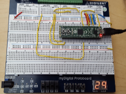

Projects
Project 3.2.3 Counter Design: April 17, 2018 - April 23, 2018

Course: Digital Electronics
Partner: Jaimie Jin
This project was the last project of utilizing content solely from Digital Electronics. In this, we were tasked to create some sort of counter that could be used in the real world. My partner and I decided to create an arcade ticket counter which (as the name suggests) can count the number of tickets a customer inputs and see if they can win anything from their tickets won. This counter was an Up Counter from 0 to 99 using the 74LS193N Integrated Circuit and some AOI logic. The ticket counter has a suspend button which simulates when no tickets are inserted. It also has a recent button for when the receipt is printed and another customer can use the counter again. In this project, I was in charge of creating the circuit on CDS and half of the documentation. My partner used my CDS to create a PLD file and implement this on a breadboard to test. I coordinated well with my partner and met all deadlines we assigned before. Besides general counter design knowledge obtained(how to build counters with different flip-flops and latches), the counter project also exposed me to how counters are used in real life and how they are so prevalent around us yet we do not realize this. For example, I completely disregarded how a basketball shot clock is a down counter from 24 to 0 even though I watch the sport a lot.